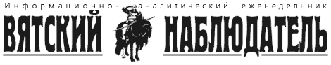

Лента новостей (архив)
Hовости за декабря 2004 года
Кировские единороссы поддержали кандидатуру Вячеслава Ягдарова на дополнительных выборах в областное Законодательное собрание
30 ноября 2004 (12.12.48)
27 ноября состоялось заседание Политического совета Кировского регионального отделения партии "Единая Россия". Председатель комиссии Политсовета по участию в избирательных компаниях Геннадий Штин сообщил о результатах рассмотрения заявления кандидата в депутаты ОЗС по Белохолуницкому округу директора племсовхоза "Соколовка" Зуевского района Вячеслава Ягдарова: оценив рейтинг кандидатов в депутаты, комиссия рекомендовала Политсовету поддержать Ягдарова, одновременно предложив кандидату Дмитрию Никулину, ранее поддержанному КРО "Единая
Россия", "объединить усилия" с Ягдаровым и "поддержать его на дополнительных выборах".
Предложение комиссии было принято Политсоветом единогласно. Ранее кандидатура Вячеслава Ягдарова была поддержана областным отделением Аграрной партии.
Ставка налога за один игровой автомат возросла с 2 до 5 тысяч рублей
29 ноября 2004 (16.02.33)
В окончательном чтении приняты изменения в закон Кировской области "О налоговых ставках на игорный бизнес", предложеные Кировской городской Думой.
До сих пор ставка налога на игорный бизнес составляла 2 тыс. руб. с одного игрального аппарата. Другие регионы пересматривают у себя ставки налогов на игорный бизнес в сторону увеличения, и практика показывает, что это не мешает бизнесу интенсивно развиваться.
Федеральный закон (2-я часть НК) устанавливает для регионов возможность регулировать величину данного налога в пределах 1,5-7,5 тыс. руб. Городская Дума предложила увеличить ставку налога за один игровой автомат до 5 тыс. руб. По расчетам, это позволит дополнительно привлечь в бюджет г. Кирова 30 млн руб. Депутаты областного Законодательного собрания поддержали своих коллег и проголосовали за соответствующие изменения в закон. Информационно-аналитический отдел ОЗС.
Штраф за выгул собак без намордников увеличен в 6 раз - до 25 МРОТ
29 ноября 2004 (16.02.33)
Депутаты областного Законодательного собрания на своем заседании 25 ноября внесли изменения в Закон Кировской области "Об административной ответственности".
В закон внесены изменения, предусматривающие административную ответственность за изготовление и (или) сбыт гражданами непищевых спиртосодержащих жидкостей. Кроме того, из закона исключена статья, предусматривавшая ответственность за навязывание религиозных убеждений, как противоречащая законодательству о свободе совести.
Введена административная ответственность за неисполнение или ненадлежащее исполнение нормативных правовых актов представительных органов местного самоуправления (районных и городских Дум). А кроме того - за размещение в общественных местах игровых автоматов без специального разрешения.
Четкого перечня, какие породы можно считать бойцовскими, в России не существует - федеральные законодатели так и не определились с этим вопросом. Поэтому предусмотреть в законе повышенную административную ответственность за нападение собак бойцовских пород оказалось проблематичным. Но и оставлять этот вопрос без законодательного pегулирования депутаты не могли. Предложение депутата В. Сураева установить штраф по максимуму - до 50 МРОТ - было встречено с энтузиазмом. Однако, еще раз просмотрев Кодекс об административных правонарушениях, депутаты обнаружили, что максимальный штраф, который можно наложить на физическое лицо, - 25 МРОТ. Поэтому ответственность владельцев ограничили вилкой 7-25 МРОТ (было до 4 МРОТ).
Максимальный штраф за выгул собак без намордника и поводка, если собака ни на кого не напала, тоже повышен с 4 до 10 МРОТ. Решение об этом принято депутатами единогласно.
Снижен с 10 МРОТ до 7 МРОТ минимальный размер штрафа за причинение ущерба имуществу и здоровью граждан (это связано с практикой взыскания штрафов по решениям мировых судей в районах области, где жизненный уровень очень низок). Информационно-аналитический отдел ОЗС.
Ветераны труда будут получать вместо льгот 220 рублей ежемесячно
29 ноября 2004 (14.45.09)
Законодательное собрание Кировской области приняло во втором (окончательном) чтении закона "О мерах социальной поддержки ветеранов труда, тружеников тыла и жертв политических репрессий".
Законопроект с первого чтения по сути не претерпел изменений, суммы выплат по всем категориям остались прежними. Предложение депутата Зорина увеличить суммы выплат ветеранам труда и репрессированным до 500 рублей, труженикам тыла - до 600 рублей было отклонено рабочей группой, т.к. резервов на такие выплаты в областном бюджете нет.
Предложение правового управления аппарата ЗС - не фиксировать в данном законе твердые суммы выплат, а определять их каждый год законом об областном бюджете, индексируя в зависимости от уровня инфляции и возможностей бюджета, - не прошло: в законе зафиксированы твердые суммы выплат. Ветеранам труда - 220 руб. Труженикам тыла - 300 руб. Реабилитирован-ным - 300 руб. Лицам, признанным пострадавшими от политических репрессий - 235 руб.
Информационно-аналитический отдел ОЗС.
Областной бюджет на 2005 год принят с дефицитом в 981,7 млн рублей
29 ноября 2004 (14.45.09)
Законодательное собрание Кировской области приняло в третьем и окончательном чтении областной бюджет на 2005 год.
Изменились основные параметры бюджета. Доход бюджета в 2005 году планируется в размере 11 млрд 214 млн руб. (в первом чтении принималось 9 млрд 703 млн руб.). Расход - 12 млрд 214 млн руб. (10 млрд 250 млн руб.), дефицит - 981,7 млн руб. (547,9 млн руб.).
Учтено предложение депутатов о выделении бюджетных средств на реализацию законов "О региональной научно-технической политике" и "О промышленной политике" (предусмотрено 30 млн руб.). По предложению депутатов Н. Ануфриева и В. Агалакова в бюджете учтены расходы на областную целевую программу "Неотложные меры по обеспечению лечебно-профилактических учреждений высокотехнологичным оборудованием" (100 млн руб.).
Уточнены пропорции финансирования льгот в Минфине: из федерального бюджета на реализацию Закона "О ветеранах" региону будет передано 173,8 млн руб. (22,3% от запланированных в областном бюджете ассигнований); на "детские" пособия - 66,7 млн руб. (34% - соответственно).
По предложению депутата М. Лихачева дополнительно предусмотрена строка "Субсидии на покрытие убытков от реализации услуг учреждениям бюджетной сферы в части расчетов за природный газ" (25,3 млн руб.).
По предложению депутатов предусмотрены средства на 20-процентное повышение зарплаты работникам бюджетной сферы (1045 млн руб.).
Увеличены дотации на сельское хозяйство - на 87 млн руб., из них: на улучшение плодородия почв - 37 млн руб., на лизинг - 50 млн руб. Информационно-аналитический отдел ОЗС.
Рассмотрение иска о признании недействительным решения акционеров КХЧК о выплате дивидендов за 2003 год перенесено
29 ноября 2004 (01.07.49)
Арбитражный суд Кировской области перенес на неопределенный срок рассмотрение иска миноритарного акционера ОАО "Кирово-Чепецкий химический комбинат" (КЧХК) о признании недействительным решения собрания акционеров от 28 сентября 2004 года о выплате дивидендов за 2003 год. Судебное заседание перенесено из-за болезни истца.
Суд был назначен на 25 ноября, а 19 ноября акционеры КЧХК на внеочередном собрании уже успели отменить решение о дивидендных выплатах за прошлый год. Кроме того, комбинат направлял в суд отзыв на это исковое заявление, в котором признал требования истца и согласился с незаконностью выплаты дивидендов из-за отсутствия чистой прибыли по итогам 2003 года (прошлый год КЧХК закончил с убытком в 190 млн. руб.). "AK&M".
В декабре на Октябрьском рынке откроется специализированный мусульманский магазин
29 ноября 2004 (01.07.49)
В начале декабря в Кирове в помещении бывшей мастерской на
Октябрьском рынке откроется специализированный мусульманский магазин. В нем будут продавать мясные продукты, полуфабрикаты, мясо (конина, говядина, баранина, птица), приготовленные по мусульманским канонам.
Среди мясных продуктов не будет свинины, так как свинья у мусульман считается священным животным. Скот для продажи будет зарезан под личным контролем муфтия вятского в сопровождении молитвы. Продавцами в магазине станут также мусульмане. ИА СетьИнформ.
Cубсидии по оплате услуг ЖКХ в Кировской области получают 14,1 процентов семей
29 ноября 2004 (01.07.49)
По состоянию на 30 сентября 2004 года субсидии по оплате жилищно-коммунальных услуг получили 83,6 тыс. семей с низким совокупным доходом (14,1% от числа семей, проживающих в области).
Общая сумма начисленных субсидий в январе - сентябре составила 325,3 млн рублей. Наибольший удельный вес в общей сумме составили субсидии на оплату отопления (44%), жилья (14%) и горячей воды (11%). В среднем на одну семью пришлось 432 рубля начисленных субсидий в месяц (в январе - сентябре 2003 года - 347 рублей). Кировстат.
Гостиница "Вятка" будет сдана в аренду
24 ноября 2004 (12.55.08)
Управление по делам муниципальной собственности города Кирова объявило о проведении открытого по составу участников конкурса на право заключения договора аренды здания гостиницы "Вятка".
Срок договора аренды - пять лет. Начальная цена - 7 млн рублей (с НДС). Начальный размер годовой арендной платы - 21 млн 67 тыс. 105 рублей 32 коп.
Участники конкурса должны до 22 декабря представить в управление по делам муниципальной собственности предложения по цене за право заключения договора аренды и размеру годовой арендной платы, бизнес-предложения по использованию здания, предложения по ремонту фасада здания и обустройству прилегающей территории. Конкурс состоится 24 декабря в 10.00.
В 2005 году среднеотпускные тарифы на электроэнергию возрастут на 9,5 процентов, на тепло - на 19,8 процентов
23 ноября 2004 (10.45.01)
22 ноября состоялось заседания правления региональной энергетической комиссии Кировской области, на котором рассмотрен вопрос о тарифах на электрическую и тепловую энергию, отпускаемую ОАО "Кировэнерго" в 2005 году.
ОАО "Кировэнерго" предлагало увеличить средний тариф на электрическую энергию на 38 процентов, а на тепловую энергию на 34 процента.
После тщательной проверки расчетов, представленных ОАО "Кировэнерго", эксперты предложили сократить валовую выручку энергетиков почти на 20 процентов (на 1854416 тыс. рублей).
С учетом экспертных заключений правлением РЭК утверждены по основным группам потребителей следующие тарифы: - на электроэнергию для городского населения 1 руб. 16 коп. за 1 киловаттчас, - сельского населения и населения, пользующегося электроплитами, - 82 коп., - бюджетных потребителей - 1 руб. 40 коп., - сельхозтоваропроизводителей - 1 руб. 42 коп.
Для прочих потребителей тарифы определены в зависимости от напряжения следующие величины: - высокое - 94 коп. за 1 киловаттчас, - среднее первое - 1 руб. 35 коп., - среднее второе - 1 руб. 40 коп, - низкое - 1 руб. 64 коп.;
На теплоэнергию для прочих потребителей 288 руб. за 1 гигокалорию.
Рост среднеотпускных тарифов по сравнению с действующими составил на электроэнергию 9,5 процентов, на теплоэнергию 19,8 процентов (при установленном ФСТ максимальном росте по сравнению с действующими тарифами на электрическую и тепловую энергию соответственно 11,3 и 22,8 процентов). Пресс-служба правительства области.
В октябре задолженность по зарплате в Кировской области возросла на 20 млн 898 тыс. рублей
23 ноября 2004 (03.22.31)
Просроченная задолженность по выплате заработной платы работникам по Кировской области на 1 ноября 2004 года составляет 274 миллиона 330 тысяч. рублей. По состоянию на 1 октября 2004 года задолженность составляла 253 миллиона 432 тысяч рублей. Таким образом, произошло увеличение задолженности на 20 миллионов 898 тысяч рублей.
Наибольшие показатели просроченной задолженности в муниципальных образованиях: г. Киров - 47 миллионов 424 тысячи рублей, Лузский район - 14 миллионов 30 тысяч рублей, г. Слободской - 11 миллионов 738 тысяч рублей, Фаленский район - 10 миллионов 302 тысячи рублей.
Далее по убывающей идут Вятско-Полянский, Яранский, Унинский, Верхнекамский, Слободской, Кикнурский, Уржумский районы. В ряде муниципальных образований существующая задолженность частично складывается из сумм недофинансирования из областного бюджета. К таким муниципальным образованиям относятся г. Слободской (37,6% вследствие недофинансирования из областного бюджета), Вятскополянский район (17,90%), г. Киров (3,4%), Унинский район (9,6%), Яранский район (8,2%), Фаленский район (7%).
Из аппарата главного федерального инспектора по Кировской области В.Пугача направлено письмо на имя заместителя председателя правительства Кировской области А. Галицких, в котором выражается обеспокоенность ростом задолженности по зарплате на предприятиях всех форм собственности. Внимание руководства правительства Кировской области обращено на сложившуюся крайне негативную ситуацию относительно задолженности по заработной плате.
В Приволжском федеральном округе реализован целый комплекс мер, направленных не только на недопущение роста задолженности по заработной плате, но и на ее уменьшение. В то же время в Кировской области за октябрь текущего года произошло не только увеличение суммы задолженности по заработной плате, но и рост числа организаций, в которых имеется задолженность, с 633 до 876. Пресс-служба аппарата
ГФИ.
В Уржуме восстановлена работа газопровода, поврежденного взрывным устройством
23 ноября 2004 (03.22.31)
В Кировской области восстановлена работа подземного участка газопровода низкого давления, поврежденного неустановленным взрывным устройством.
Как сообщили в понедельник в пресс-службе областного УВД, взрыв произошел в минувшую пятницу около 15.00 в пригороде Уржума возле поселка Петряево. Повреждение трубопровода диаметром 108-мм оставило без газоснабжения 100 домов Уржума.
По предварительным данным, мощность взрывного устройства составила 100 граммов в тротиловом эквиваленте. "В результате взрыва, кроме газопровода, был поврежден также шкафной регулировочный пункт", - отметили в пресс-службе.
На место взрыва выезжали спасатели, оперативная группа УВД, УФСБ и сотрудники областной прокуратуры. Отрабатываются несколько версий случившегося, одна из основных - хулиганские действия.
В настоящее время прокурором Кировской области возбуждено уголовное дело по ст.215.2 УК РФ ("приведение в негодность объектов жизнеобеспечения"), проводятся оперативно-розыскные и следственные действия. "Интерфакс-Поволжье".
Кировский "Водоканал" передан в аренду "Кировским коммунальным системам" на 15 лет
23 ноября 2004 (03.22.31)
ОАО "Кировские коммунальные системы", дочерняя компания ОАО "Российские коммунальные системы", подписало первый долгосрочный договор аренды имущества.
Условиями договора предусматривается передача в аренду "ККС" МУП "Водоканал" г. Кирова сроком на 15 лет. В настоящее время договор находится на регистрации и вступит в силу до 1 декабря 2004 г. Ранее договор был представлен на обсуждение в Кировскую городскую Думу и получил одобрение депутатов.
Новый долгосрочный договор заметно повышает заинтересованность ОАО "Российские коммунальные системы" и ее дочернего общества - ОАО "Кировские коммунальные системы" в развитии инвестиционных проектов на территории Кировской области. На поддержание городских объектов водоснабжения и водоотведения уже перечислены первые 30 млн руб., до конца года поступит еще 70 млн руб. Договор, заключенный "Кировскими коммунальными системами", стал первым долгосрочным договором аренды муниципального имущества с начала деятельности ОАО "РКС" в регионах.
В настоящее специалисты проводят технический аудит "Водоканала". По его результатам совместно со специалистами ОАО "Кировэнерго" будут разработаны планы первоочередных мероприятий по модернизации системы водоснабжения, способных дать быструю отдачу. В частности, планируется строительство нового водозабора, что значительно снизит потери в сетях и повысит качество очистки воды. Дирекция по стратегическим коммуникациям ОАО "Российские коммунальные системы".
За десять месяцев оборот розничной торговли в Кировской области вырос на 7,7 процента
21 ноября 2004 (21.43.01)
Оборот розничной торговли в январе-октябре т.г. составил 23864,4 млн рублей и возрос по сравнению с аналогичным периодом прошлого года в сопоставимых ценах на 7,7 процента. Население области израсходовало на приобретение товаров на 3782,2 млн рублей больше, чем за аналогичный период прошлого года.
Торгующими организациями сформировано 88,4 процента оборота розничной торговли (в том числе малыми предприятиями - 12,8, индивидуальными предпринимателями, реализующими товары вне рынков - 30,7 процента), доля рынков составила 11,6 процента.
В структуре оборота розничной торговли удельный вес продовольственных товаров составил 53,2 процента, непродовольственных - 46,8 процента.
Продовольственных товаров в розничной торговле населению продано на 12698 млн рублей, или на 3,9 процента больше соответствующего периода прошлого года, непродовольственных - на 11166,4 млн рублей, что в сопоставимых ценах на 12,2 процента больше, чем за тот же период 2003 года.
Предприятиями общественного питания реализовано продукции на 1726 млн рублей, что в сопоставимых ценах на 5,8 процента больше, чем за тот же период 2003 года. Кировстат.
В октябре объем промышленного производства в Кировской области сократился на 0,7 процента
21 ноября 2004 (21.43.01)
В январе-октябре 2004 года промышленностью области произведено продукции (работ, услуг) в действующих ценах на сумму 44,3 млрд рублей. Индекс физического объема произведенной продукции по отношению к январю - октябрю 2003 года составил 102,3 процента, а темп роста в фактических ценах - 122,6 процента.
Увеличили объем произведенной продукции в реальном исчислении предприятия топливной промышленности (на 82,9%), микробиологической (на 34,7%), полиграфической (на 20%), черной металлургии (на 12,5%), химической и нефтехимической (на 11,3%), электроэнергетики (на 4,9%), лесной, деревообрабатывающей и целлюлозно-бумажной промышленности (на 2,5%), медицинской (на 2%), цветной металлургии (на 1,3%). Снизили объемы выпуска промышленной продукции предприятия пищевой промышленности (на 0,9%), легкой (на 2,3%), машиностроения и металлообработки (на 3,9%), строительных материалов (на 5,2%), мукомольно-крупяной и комбикормовой промышленности (на 18%). В октябре объем промышленного производства снизился по сравнению с уровнем этого же периода прошлого года на 0,7 процента, а к предыдущему месяцу - на 0,4 процента. Кировстат.
Депутаты областного Законодательного собрания собираются увеличить ставку сборов с игровых автоматов с 2 до 5 тысяч рублей
21 ноября 2004 (21.43.01)
На игорном бизнесе бюджет города Кирова в следующем году дополнительно заработает 30 миллионов. Именно такая цифра получилась в результате просчета эффекта от увеличения ставок на игровые автоматы.
С предложением увеличить ставки на игровые автоматы до 5 тысяч рублей в месяц в Законодательное собрание Кировской области вышла Кировская городская Дума.
Существующая на сегодняшний день ставка в 2 тысячи, по мнению городских депутатов, слишком мала, а игорный бизнес приносит существенные доходы. Об этом можно судить хотя бы по тому факту, что только за последний год в областном центре количество игровых автоматов выросло почти в 5 раз. Федеральный закон позволяет регионам регулировать у себя величину данного налога в пределах 1,5 - 7,5 тысяч рублей, и в большинстве регионов она значительно выше минимального значения. Депутатам Законодательного собрания предстоит вынести окончательное решение по этому вопросу на ноябрьском заседании 25 ноября. Информационно-аналитический отдел ОЗС.
Для продавцов бытовой химии и автомобилей "вмененка" с 1 января возрастет в 1,5 раза
21 ноября 2004 (21.43.01)
В налогообложении с 1 января 2005 года произойдут изменения, направленные на увеличение налоговой нагрузки для предпринимателей. В Кировской области попытались максимально смягчить этот удар.
В основном изменения в федеральном законе коснулись малого бизнеса, который платит единый налог на вмененный доход (ЕННВД). С будущего года базовая ставка по всем видам деятельности, подпадающим под данную схему налогообложения, вырастет в полтора раза. А это значит, что налоговая нагрузка на российских предпринимателей возрастет на 50 процентов.
Соответствующие изменения должны внести в свой закон и региональные законодатели, однако областные власти хорошо понимают, как важно "не перегнуть палку" с налогами, иначе бизнес снова начнет "уходить в тень". Все, что нам позволено сделать на региональном уровне, - это установить понижающие коэффициенты, которые учитывают особенности ведения бизнеса. Поэтому в областном законопроекте для большинства видов деятельности, подпадающих под ЕННВД, коэффициент снижается на 20%, и налоговая нагрузка вырастет не на 50%, а на 25 - 30%. Исключение составят те, кто торгует в розницу автомобилями и бытовой химией - им придется с 2005 года платить в полтора раза больше.
Еще одно важное изменение в законе коснется тех, чей бизнес - платные автостоянки. Теперь они тоже будут отчитываться по схеме ЕННВД. Базовая доходность для этого вида деятельности установлена в размере 50 рублей в месяц за 1 кв.м. стоянки, корректирующий коэффициент - от 0,35 до 0,2. Информационно-аналитический отдел ОЗС.
38,85 процентов обыкновенных акций Кирово-Чепецкого химкомбината купило ЗАО "Финтрастком"
21 ноября 2004 (21.43.01)
Российский фонд федерального имущества (РФФИ) по итогам аукциона 19 ноября по продаже пакета акций 38,85% уставного капитала ОАО "Кирово-Чепецкий химический комбинат имени Б.П. Константинова" признал победителем ЗАО "Финтрастком", предложившее за выставленный пакет акций 2 млрд 913 млн 50 тысяч рублей. Аукцион проводился в открытой форме по составу участников и закрытый по форме подачи предложений о цене акций.
На аукцион выставлялись 510 тысяч 714 обыкновенных именных акций (38,85%); в том числе 260 тысяч 940 акций (19,85% уставного капитала) находящиеся в собственности РФ, 249 тысяч 774 акции (19% уставного капитала) находящиеся в собственности Кировской области.
При общей номинальной стоимости акций 510 тысяч 714 рублей начальная цена продажи пакета акций была установлена в размере 1 миллиард 704 миллиона рублей.
По результатам рассмотрения представленных документов комиссия признала участниками аукциона 4 претендентов: ООО "Новые финансовые технологии", ЗАО "Петербургрегионгаз", ЗАО "Финтрастком" и ООО "Красногорский асфальто-бетонный завод".
Кирово-Чепецкий химкомбинат - производитель фторполимеров, сырья для производства пластмасс и тефлона. В его состав входят заводы полимеров, минеральных удобрений. Годовой оборот около $160 млн. Об этом сообщила пресс-служба РФФИ.
По информации РИА "Новости", в РФФИ не смогли уточнить, чьи интересы представляет эта компания. По мнению экспертов, эта компания может представлять интересы менеджмента комбината.
По сообщению пресс-службы "Газпрома", группа компаний "Газпром" подавала заявку на участие в аукционе через компанию "Петербургрегионгаз". "Участие группы "Газпром" в аукционе связано с консолидацией нефтехимических активов. Кроме того, комбинат является крупнейшим потребителем газа в Кировской области, поэтому "Газпром" заинтересован в его стабильном положении", - так в пресс-службе "Газпрома" прокомментировали сообщение о подаче концерном заявки на участие в аукционе.
Уржумский СВЗ, ООО "Инвестпром" и племзавод "Красногорский" получили золотые медали на российской агропромышленной выставке
21 ноября 2004 (21.43.01)
Тридцать медалей, в том числе шесть золотых, завоевали представители предприятий пищевой промышленности Кировской области на российской агропромышленной выставке "Золотая осень 2004" в г. Москве.
В выставочном марафоне, организованном министерством сельского хозяйства РФ и правительством Москвы уже в шестой раз, приняли участие две тысячи предприятий и организаций из 70 регионов России и более чем 20 стран ближнего и дальнего зарубежья. Выставочные площади "Золотой осени" стали местом международной встречи коллег по сельхозтоваропроизводству всех форм собственности, представителей предприятий по переработке сельскохозяйственной продукции и производству продуктов питания. В ходе мероприятия состоялся всесторонний обмен положительным опытом по внедрению в производство новейших научных разработок и технологий, современного оборудования и сельскохозяйственной техники.
От Кировской области в работе выставки участвовали 14 предприятий пищевой и перерабатывающей промышленности и 5 предприятий машиностроения для АПК. Вятская экспозиция, представленная единым региональным стендом, была размещена на площади более 80 кв. метров.
По итогам конкурса "Лучшая продовольственная продукция 2004 года" награды завоевали: - ОАО "Уржумский спиртоводочный завод" - 3 золотых, 6 серебряных и 1 бронзовая медаль; - ОАО "Кировский мясокомбинат" - 2 серебряные и 1 бронзовая медали; - ОАО "Слободской мясокомбинат" - 2 серебряные медали; - ООО "Инвестпром" - 1 золотая и 1 серебряная медали; - ОАО "Таурас" г. Советск - 3 бронзовые медали; - ООО Мясокомбинат "Дороничи" - 3 бронзовые медали; - ЗАО "Кировский молочный комбинат" - 1 серебряная медаль и диплом; - ОАО "Городской молочный завод" г. Кирово-Чепецк - 1 бронзовая медаль; - ОАО "Вожгальский маслодельно-сыродельный завод" - 1 серебряная медаль; - ЗАО Агрокомбинат племзавод "Красногорский" - 2 золотые медали; - ООО Кировский консервный завод "Принто ТМ" - 2 бронзовые медали.
Золотой медалью и дипломом первой степени были также отмечены зерноочистительные машины совместного производства ПКБ зонального НИИ СХ Северо-Востока им. Рудницкого и ОАО "Яранский механический завод". Пресс-служба правительства области.
Телеканал FoxKids и Вятское кабельное телевидение проводят "Осенний Кубок по мини-футболу" среди кировских школ
21 ноября 2004 (21.43.01)
28 ноября в Кирове пройдет "Осенний Кубок по мини-футболу на приз канала FoxKids и ВятКТВ" среди школ юго-западного района г. Кирова. В играх примут участие команды школ № 27, 47, 52 и 60. Участниками игр станут школьники до 13 лет.
Ежегодно FoxKids проводит международный турнир по футболу для детей в возрасте до 13 лет. В марте-мае проходят отборочные игры в различных городах, в июле - финальные игры. Финал чемпионата 2004 года проходил во Франции.
По результатам "Осеннего Кубка" будет принято решение о включении Кирова в список городов, где пройдут отборочные игры чемпионата 2005 года. "Наша цель - дать кировским школьникам шанс участвовать в мировом первенстве по футболу", - заявил директор по развитию ООО "ВятКТВ" Николай Плюснин. ИА СетьИнформ.
Прокуратура Кировской области попросила родителей сообщать о школьных поборах
21 ноября 2004 (21.43.01)
Прокуратура Кировской области обратилась к кировчанам с просьбой сообщать о фактах школьных поборов, не боясь называть себя.
Дело в том, что прокуратура не имеет возможности и законных полномочий опрашивать родителей всех школ города в целях выявления незаконных сборов денежных средств. Однако известно, что подобные случаи в области существуют.
В первом полугодии 2003 года в органы прокуратуры г. Кирова и районов поступило около 10 обращений по фактам поборов в различных образовательных учреждениях. И это только единичные случаи.
Как сообщили в прокуратуре области, областной Закон "Об образовании в Кировской области" запрещает взимание денежных средств, получение личного имущества родителя обучающегося через школьные и общественные фонды, организации, союзы в интересах образовательного учреждения в принудительной или иной форме, нарушающей принцип добровольного волеизъявления граждан и противоречащей действующему законодательству. В то же время Закон РФ "Об образовании" позволяет образовательным учреждениям привлекать дополнительные финансовые средства за счет добровольных пожертвований и целевых взносов физических и юридических лиц.
При выявлении фактов незаконного сбора средств с родителей органы прокуратуры обязаны привлекать к дисциплинарной ответственности директоров школ и дошкольных учреждений. Но без помощи показаний родителей и свидетелей наказать виновных сложно. ИА СетьИнформ.
16 ноября бензин и дизтопливо подорожали на 2-6 процентов
17 ноября 2004 (01.08.40)
16 ноября в Кировской области вновь выросла стоимость бензина. Цена на бензин 80-й марки возросла на 20 копеек и составила 12 рублей 50 копеек. Также на 70 копеек подорожало дизельное топливо. Его стоимость составила 12 рублей 80 копеек.
Как сообщили в Кировском филиале компании "Лукойл-Пермнефтепродукт", рост цен связан с увеличением закупочных цен на оптовом рынке. ИА СетьИнформ.
Великобритания стала крупнейшим импортером продукции кировских предприятий
16 ноября 2004 (02.24.19)
В ноябре 2004 объем внешней торговли Кировской области составил 25,42 млн долларов США, что на 9,78 процента больше, чем в ноябре прошлого года.
Как сообщили в Кировской таможне, экспорт товаров увеличился на 26,48%, а импорт уменьшился - на 49,15%.
Внешнеэкономическую деятельность в Кировской области осуществляли 154 участника ВЭС. В целом количество участников уменьшилось на 11%, в том числе юридических лиц -на 2,4% и физических лиц - на 31,9%.
Самым крупным экспортером Кировской области является ОАО "Кирово-Чепецкий химический комбинат" - 50,33%, а импортерами - ЗАО промышленно-строительный концерн "Проммонтаж" (14,79%), ОАО "Кировский комбинат искусственных кож" (12,85%), ОАО "Весна" (10,06%), ЗАО "МЦ-5" (8,97%).
Торговыми партнерами Кировской области в ноябре 2003 года являлись 52 страны, с 18-ю из них торговые отношения поддерживались в двустороннем порядке. Наибольший удельный вес в общем объеме экспорта товаров региона приходится на Великобританию - 23,5%, Бразилию - 12,3%, Украину - 7,8%, Францию - 7,5% и Италию - 7,2%.
Экспорт древесины был зарегистрирован в 27 стран. Самыми крупными партнерами при экспорте древесины (в основном это еловый обрезной пиломатериал) стали Египет, Финляндия, США, Италия, Азербайджан и Греция. ИА REGNUM.
Кирово-Чепецку не разрешили стать "Культурной столицей Приволжья"
16 ноября 2004 (01.54.05)
С 2006 года у Приволжского федерального округа будут две культурные столицы - Пермь и Нижний Новгород. Такое решение было принято на Социальном Форуме-2004, состоявшемся в Перми.
По словам полномочного представителя президента РФ в ПФО Сергей Кириенко, "сегодня конкурс "Культурная столица Поволжья" проводится на очень высоком уровне совместно с европейским экспертным советом, ипредполагает очень серьезную отдачу от победителей. В этом году победителем был Ижевск, и в нем прошло 700 культурных мероприятий.
Проект "Культурная столица" в этом городе показал, что богатство культурного потенциала является источником регионального развития. В 2005 году решено организовать своеобразную сеть культурных столиц - это шесть городов-победителей прошлых лет, где будут проводиться культурные мероприятия. В 2006 году культурными столицами станут два города-миллионника - Пермь и Нижний Новгород. У них полтора года на подготовку к большой культурной программе". Об этом сообщило ИА "Сетьинформ".
В числе претендентов на звание "Культурной столицы-2006" был и Кирово-Чепецк (Кировская область), но его заявку отклонили. Однако, в "сеть культурных столиц" войдет и город Киров, который был "Культурной столицей Приволжья" в 2002 году.
Главный редактор газеты "Вятский край" стал председателем правления Кировский организации Союза журналистов
16 ноября 2004 (01.54.05)
В Кирове прошла отчетно-выборная конференция областной журналистской организации общественной организации "Союз журналистов России".
Выступивший с отчетным докладом Николай Мясников, руководивший Союзом на протяжении 23 лет, сложил свои полномочия. Новым председателем правления областного творческого союза избран главный редактор газеты "Вятский край" Василий Смирнов.
Кировские отделения движения "Держава" и "Союза народовластия и труда" прекратили свое существование
16 ноября 2004 (01.54.05)
Управление Министерства юстиции Российской Федерации по Кировской области известило о трех новых общественных объединениях, зарегистрированных в качестве юридических лиц в октябре 2004 года. Среди них Кировское городское отделение Кировского регионального отделения Общероссийской общественной организации инвалидов "Интеграция", Кировская Региональная Общественная Организация "ТЕРРА" и Кировская региональная общественная организация защиты прав автотранспортников.
Девять общественных объединений признаны прекратившими деятельность в качестве юридических лиц на основании решения суда и исключены из реестра юридических лиц. В том числе Кировское региональное отделение Общероссийского политического общественного движения "Социально-патриотическое движение "Держава" (СПД "Держава"),
Кировское региональное общественное движение "Искра", Кировская областная региональная организация Общероссийской общественной организации "Центр поддержки молодежных инициатив", Кировское региональное отделение Общероссийского политического общественного движения "Союз народовластия и труда", Кировское областное общественное учреждение "Дом науки и техники" и Кировская региональная общественная организация "Логос".
Бывший первый заместитель губернатора Сергеенкова стал руководителем секретариата губернатора Шаклеина
14 ноября 2004 (23.22.39)
Алексей Андреевич Пинаев, старший эксперт секретариата губернатора Кировской области переведен с 9 ноября на должность руководителя группы советников с одновременным исполнением обязанностей руководителя секретариата губернатора Кировской области.
Ранее исполнявший обязанности руководителя секретариата губернатора Владимир Петрович Лебедев продолжает работать советником губернатора Кировской области. Пресс-служба правительства области.
Участники авторынка пожаловались на нехватку кадров и на высокую конкуренцию, стоимость оборудования и арендную плату
14 ноября 2004 (23.15.02)
В текущем году Кировстатом было проведено обследование 20 организаций Кировской области, оказывавших услуги по продаже, прокату, техобслуживанию и ремонту автотранспортных средств в 2003 году.
В предложенных анкетах организации автосервиса отметили, что в своей работе они сталкивались с немалыми трудностями. Основной проблемой 57% организаций назвали высокую конкуренцию, 48% - высокую стоимость необходимого для работы оборудования, 43% - нехватку квалифицированных кадров, 24% - высокую арендную плату за занимаемые помещения. Однако, несмотря на все трудности, более половины обследуемых организаций собираются в ближайшем будущем расширять свой бизнес. Кировстат.
Счетная палата РФ предотвратила продажу областного пакета акций КЧХК отдельно от федерального
14 ноября 2004 (22.42.38)
Во время предпродажной подготовки предприятий федеральной собственности происходит больше всего нарушений приватизационного законодательства. Об этом заявил корреспонденту "ФК-Новости" аудитор Счетной палаты РФ Владислав Игнатов.
Счетная палата РФ ежегодно проводит проверки в Росимуществе, причем тщательно анализируется ход приватизации, предпринимаются меры к исправлению нарушений, подчеркнул аудитор.
В качестве примера Игнатов привел процесс подготовки к приватизации Кирово-Чепецкого химического комбината. В нарушение постановления правительства РФ о продаже пакета акций единым лотом Кировская область попыталась свою часть реализовать на рынке самостоятельно. "Этот факт вскрыла наша проверка, было подготовлено представление, информация передана в правительство, ситуация исправлена", - сказал Игнатов. "ФК-Новости".
Некоторые из новых муниципальных образований в ближайшие годы придется укрупнять
14 ноября 2004 (22.42.38)
Цель реформы местного самоуправления, заявленная российским правительством, -"максимально приблизить местную власть к народу". Для этого правительство предлагает создать большое количество муниципальных образований, наделив их органами управления и соответствующими полномочиями. Однако практика показывает: надо бы не"дробиться", а наоборот, "укрупняться".
Узнать, как идет реформа местного самоуправления на местах, поехала делегация из представителей отраслевых структур (департаментов образования, здравоохранения, социального развития и т.д.), а также руководителей управления по административным вопросам и работе с территориями областного правительства.
Путь лежал в Свечинский и Богородский районы. Важно было узнать, правильно ли областная власть определилась с границами муниципальных образований. Конечно, проводя эту масштабную работу, разработчики закона "Об установлении границ муниципальных образований:" опирались на пожелания местных администраций, решения районных Дум и сельских сходов. Но необходимо было лично удостовериться, что вновь образуемые муниципальные образования имеют экономические и социальные перспективы.
Как выяснилось, это далеко не так, и после личных бесед с районными руководителями проверяющие убедились: перспективы сильно преувеличены. То, что многие из вновь создаваемых муниципальных образований не имеют собственных производств и не смогут жить самостоятельно, были вынуждены признать и сами главы районов. Об этом члены делегации доложили на рабочей группе по доработке законопроекта "Об установлении границ муниципальных образований".
Выход был найден такой: объединять бесперспективные поселения с более экономически сильными в единые муниципальные образования. Члены рабочей группы отметили, что, возможно, в ближайшие два года придется не раз возвращаться к этому закону, вновь и вновь "перекраивая" муниципальные границы. И скорее всего, процесс пойдет в сторону укрупнения. Информационно-аналитический отдел ОЗС.
Лесные поселки-анклавы на территории соседних регионов по новому закону не могут быть включены в состав Кировской области
14 ноября 2004 (22.42.38)
Исторически сложилось так, что в административном подчинении Кировской области есть несколько населенных пунктов, расположенных на территории других регионов.
Так, например, поселок Чурсья территориально принадлежит республике Коми и исправно отчисляет туда налоги, но получает содержание из бюджета Опаринского района Кировской области. В подобной ситуации оказались поселки Пелес, Бодья и Чернореченский Верхнекамского района и поселок Сёва Афанасьевского района.
Логично было бы передать их в административное ведение соседних регионов либо "перекроить" границу Кировской области. Но переписка, которая ведется между региональными властями на эту тему вот уже 10 лет, не приносит результатов - соседи отказываются взять на себя лишнюю "обузу" или "поделиться" территорией.
И вот, когда настало время определиться с границами муниципальных образований, их статусом и, соответственно, формами управления в муниципальных образованиях, мы не можем этого сделать в отношении "спорных" поселков. Ведь по федеральному закону регион имеет право решать такие вопросы только в пределах своих границ. И если региональные власти включат эти поселки в областной закон, то это будет трактоваться как превышение полномочий. В то же время, если они окажутся вне рамок закона, то лишатся финансового обеспечения.
На рабочей группе, созданной при правительстве области и
Законодательной собрании, был предложен такой выход из, казалось бы, неразрешимой ситуации: не включать эти поселки в закон об установлении границ муниципальных образований, а подготовить по ним отдельный нормативный акт, который бы позволил решить вопросы с финансированием. В то же время необходимо активизировать переговоры - причем не только с соседними регионами, но и с Москвой. Информационно-аналитический отдел ОЗС.
План десяти месяцев по наполнению областного бюджета исполнен на 126,3 процента
14 ноября 2004 (22.42.38)
За январь-октябрь 2004 года усилиями налоговой службы Кировской области собрано в бюджетную систему 10 млрд 457,6 млн руб. Задание выполнено на 113,1 процента.
Собранные на территории области налоги и сборы распределились следующим образом: в федеральный бюджет направлено 32,3% налоговых поступлений, 67,7% осталось на территории области.
Задание по наполнению федерального бюджета за январь-октябрь 2004 года выполнено на 106,4%, по территориальному бюджету -на 116,7%, в том числе по областному бюджету - на 126,3%, райгорбюджетам - на 103,8%.
Бюджетные назначения за 10 месяцев текущего года по единому социальному налогу выполнены на 101,3%. Отдел работы с налогоплательщиками и СМИ Управления МНС России по Кировской области.
В Кирове открылось представительство платежной системы WebMoney Transfer
8 ноября 2004 (14.51.34)
3 ноября в Кирове состоялось открытие официального представительства платежной интернет-системы WebMoney Transfer. С приходом системы WebMoney в Киров пользователи сети Интернет смогут вводитьсредства в систему для осуществления расчетов внутри системы, а также и обналичивать эти виртуальные средства.
В ближайшее время планируется организовать сервисы, позволяющие горожанам оплачивать услуги кировских предприятий, не отходя от своего монитора. В настоящий момент ведутся работы над организацией работы сервисов по оплате услуг ОАО "ВолгаТелеком" (Интернет, ГТС), МПЖХ.
В ближайшее время планируются организация продаж карт WMZ и WMR в киосках Роспечати и точках продажи карт телефонии; открытие сервиса моментального пополнения баланса лицевых счетов сотовых телефонов и интернет-провайдеров города; открытие сервиса оплаты за услуги вызова такси, доставки пиццы и прочих услуг предприятий города; организация работы сервиса WebMoney Банкинга, предоставляющего услуги срочного хранения вкладов по процентным ставкам и предоставления кредитов аттестованным участникам системы.
Адрес сайта Кировского представительства www.wmoney.kirov.ru.
Убытки ОАО "Кировэнерго" в третьем квартале составили 74,5 млн рублей
8 ноября 2004 (14.09.18)
ОАО "Кировэнерго" сообщило о снижении убытков в третьем квартале 2004 года по сравнению с предшествующим кварталом на 8805 тыс. рублей - с 83347 до 74542 тыс. рублей. Снижение убытков объясняется "оптимизацией режимов загрузки оборудования электростанций ОАО "Кировэнерго" и увеличением доли покупки электроэнергии на свободном секторе оптового рынка до 5,6%".
Каждый десятый игровой автомат не поставлен на налоговый учет
8 ноября 2004 (14.09.18)
Число игровых автоматов в Кировской области за последние полгода удвоилось и достигло почти 1000. Причем в это число входят лишь те, что были официально зарегистрированы в налоговой инспекции.
В ходе проведенных налоговыми органами в первом полугодии 2004 года рейдов по местам отдыха выявлено 103 незарегистрированных игровых автомата. Это значит, что как минимум как десятый игровой автомат не поставлен на налоговый учет, а значит, с него не шли налоги в бюджет.
Пресс-служба УМНС по Кировской области.
Кировские единороссы намерены увеличить количество членов депутатской группы "Единой России" в областном парламенте
8 ноября 2004 (14.09.18)
6 ноября в Кирове состоялась конференция регионального отделения партии "Единая Россия".
Руководителю депутатской группы "Единая Россия" в Законодательном собрании Кировской области Геннадию Мамаеву поручено "провести организационные мероприятия по увеличению числа депутатов ОЗС, входящих в депутатскую группу", а депутатам от "Единой России" - "взять на постоянный контроль своевременность и полноту выплат по реализации мер социальной поддержки", связанным с заменой льгот денежными компенсациями.
В состав регионального политсовета партии включен президент
Кировского регионального фонда поддержки "Единой России", заместитель генерального директора ОАО "Лепсе" Сергей Лаптев.
Делегатами на V Съезд партии избраны руководитель регионального исполкома КРО Герман Гончаров и член регионального политсовета КРО Владимир Косолапов.
49 процентов ОАО "Вятка-пригород" будет принадлежать правительству Кировской области
8 ноября 2004 (02.00.49)
В целях обеспечения потребностей жителей в пригородных железнодорожных перевозках правительство области приняло решение о долевом участии в создании ОАО "Вятка-пригород". Оно создается совместно с Горьковской железной дорогой - филиалом ОАО "Российские железные дороги".
Департаменту государственной собственности поручено выступить от лица области учредителем ОАО "Вятка-пригород", обеспечить представление области в совете директоров и ревизионной комиссии, до 31 декабря 2004 года внести 49 процентов от уставного капитала.
Департамент финансов должен при формировании областного бюджета ежегодно предусматривать средства, необходимые для погашения убытков ОАО "Вятка-пригород", возникающих от регулирования тарифов на перевозку пассажиров в пригородном железнодорожном сообщении. Пресс-служба правительства области.
КОГУП "Кировпищепром" будет ликвидирован
8 ноября 2004 (02.00.49)
Правительство области приняло предложение департамента государственной собственности и комитета сельского хозяйства и продовольствия о ликвидации областного государственного унитарного предприятия "Кировпищепром".
Такое решение принято в целях оптимизации деятельности областных государственных унитарных предприятий, а также во исполнение постановления правительства от 10.08.2004 №12/175 "Об оптимизации деятельности кировских областных государственных унитарных предприятий и сокращении их количества".
Департаменту госсобственности, комитету сельского хозяйства и продовольствия поручено провести ликвидацию предприятия в соответствии с действующим российским законодательством. Пресс-служба правительства области.
Строительство завода по уничтожению химического оружия в Марадыково начнется в январе
8 ноября 2004 (02.00.49)
В Кировской области началась подготовка площадки под строительство завода по уничтожению химического оружия в Марадыково. Как сообщил заместитель председателя правительства области Владимир Сысолятин, на данный момент на строящемся объекте ведутся земляные работы.
Возведение же стен планируется начать ориентировочно в январе следующего года. Работы по строительству осуществляют два кировских подрядчика, которые были отобраны на конкурсной основе.
Напомним, завод будет расположен около арсенала химического оружия в Марадыково. Завершить его строительство планируется в 2006 году. До конца года на финансирование строительства выделено 660 миллионов рублей. Закончится уничтожение Марадыковского арсенала в 2010 году. По информации ИА СетьИнформ.
Девять кировских санаториев готовы к приему льготников, нуждающихся в лечении
8 ноября 2004 (02.00.49)
Губернатор Кировской области Николай Шаклеин обсудил с министром здравоохранения и социального развития РФ Михаилом Зурабовым степень готовности региона к реализации программы санаторно-курортного лечения граждан, имеющих право на получение набора социальных услуг.
Разговор состоялся в ходе всероссийского селекторного совещания, которое вёл заместитель председателя правительства РФ Александр Жуков.
Губернатор сообщил, что в Кировской области более 18 с половиной тысяч человек нуждаются в санаторно-курортном лечении. Здравницы области готовы принять участие в программе оздоровления. Однако в данный момент отсутствует ряд нормативных документов, регламентирующих отдельные механизмы реализации данной программы.
М. Зурабов заверил Н. Шаклеина и руководителей других регионов в том, что необходимые документы будут обсуждаться на уровне правительства РФ и поступят в регионы уже в ноябре. Об этом сообщила пресс-служба правительства области.
По сообщению ИА REGNUM, Н. Шаклеин пригласил всех участников совещания, в т.ч. М. Зурабова и председателя Фонда социального страхования РФ Галину Карелову "отдохнуть в кировских здравницах", а то "летом все купаются в море, а купаться зимой в снегу тоже полезно".
Губернатор доложил, что девять кировских здравниц из десяти готовы принять граждан, имеющих льготы на лечение.
Программы вятских педагогов по спортивному туризму и предпринимательству победили на Всероссийском конкурсе авторских программ
2 ноября 2004 (01.46.16)
По итогам VI Всероссийского конкурса авторских программ дополнительного образования детей две авторские программы из Кировской области признаны победителями.
Всего в конкурсе, организованном и проведенном Федеральным агентством по образованию Министерства образования и науки РФ, участвовали 72 региона России, представившие более 700 авторских образовательных программ.
В числе фаворитов вятской педагогической мысли программа "Спортивный туризм", подготовленная М.Ю.Шайфлером и Л.А.Беляковым - педагогами дополнительного образования детей областного центра детско-юношеского туризма и экскурсий, а также программа по подготовке молодежи к предпринимательской деятельности, разработанная авторским коллективом центра детского творчества с изучением прикладной экономики г.Кирова, в составе Н.Ю.Ивкиной, Е.В.Барановой, Н.И.Гордеевой, Е.А.Житлухиной, Л.Г.Четвериковой, Т.А.Кузнецовой, Н.П.Целищевой, И.П.Коковихиной.
Дипломантом конкурса стала авторская программа журналистско-краеведческого клуба "Классика", авторами которой являются Г.А. Саурова, - редактор областной детской газеты "Я расту" и педагоги дополнительного образования областного центра детско-юношеского туризма и экскурсий. Пресс-служба правительства области.
Количество телефонных номеров в городе Кирове превысило 170 тысяч
2 ноября 2004 (01.46.16)
В 2003 году прирост числа основных телефонных аппаратов в г. Кирове составил 13841. Он получен за счет внедрения на городской сети цифровых АТС.
За девять месяцев 2004 года сеть выросла на 7892 телефона. По плану четвертого квартала в работу будет включено еще 2150.
Общая емкость сети составила на 1 октября 170775 номеров, из них 95143 (более 55 процентов) составляют телефоны цифровых АТС, которых в городе Кирове работает 43.
В третьем квартале года введены в эксплуатацию цифровые АТС в Дороничах ( номера на 512) и в Садаковском (номера на 208).
Проводится планомерная работа по замене устаревшего оборудования координатных АТС-64 на цифровую АТС-54, а также в Нововятском районе, где помимо обновления оборудования добавлено 1024 номера.
Постепенно завершается установка телефонов последним 28 состоящим на учете инвалидам и участникам войны. Об этом сообщила пресс-служба горадминистрации.
Умер директор 28-й школы Вячеслав Пономарев
2 ноября 2004 (01.46.16)
На 54 году жизни после тяжелой и продолжительной болезни скончался директор средней общеобразовательной школы № 28 Вячеслав Николаевич Пономарев.
Родился он в семье потомственных педагогов, окончил среднюю школу № 37. Свою трудовую деятельность начал в 1972 году после окончания историко-филологического факультета Кировского государственного педагогического института. Во время службы в рядах Советской Армии был награжден медалью "За боевые заслуги". Позже В.Н. Пономарев прекрасно проявил себя на комсомольской и партийной работе -в областном комитете ВЛКСМ, Первомайском райкоме КПСС, Кировском обкоме КПСС, областном управлении профтехобразования Государственного комитета по профтехобразованию РСФСР.
С 1990 года Вячеслав Николаевич возглавил среднюю общеобразовательную школу с углубленным изучением отдельных предметов № 28 г. Кирова. В 2000 году за значительные успехи в организации и совершенствовании учебно-педагогического и воспитательного процессов, большой личный вклад в практическую подготовку учащихся отмечен нагрудным знаком "Почетный работник общего образования Российской Федерации".
Соболезнование родным и близким в связи со смертью Пономарева выразили администрация города Кирова, Кировская городская Дума, администрация Первомайского района г. Кирова и управление образования администрации г. Кирова. Об этом сообщила пресс-служба горадминистрации.
За десять месяцев цены выросли на 9,6 процента
2 ноября 2004 (01.46.16)
В октябре 2004 г. общий прирост цен на товары и услуги в среднем по Кирвоской области составил 1,6 процента, по отношению к декабрю 2003 года - 9,6 процента.
Цены на ПРОДОВОЛЬСТВЕННЫЕ ТОВАРЫ (включая алкогольные напитки) в октябре увеличились 1,7 процента (за период с начала года - 1,9%). Значительно поднялись цены на яйца (на 23,6%), сливочное масло (на 11,1%), свинину с костями (на 10,7%), фарш мясной (на 10,4%), говядину I категории (на 8,6%). Говядина и свинина бескостные, баранина, колбасные изделия и копчености, рыба живая и охлажденная, смеси сухие молочные для детского питания, хлеб и хлебобулочные изделия, обеды в столовых в организациях, кофе в кафетерии, коньяк ординарный отечественного производства подорожали на 2-7 процентов. В то же время продолжалось сезонное снижение цен на плодоовощную продукцию и картофель (на 4,9%), в том числе морковь подешевела на 13,4 процента, картофель - на 12,7,свежая капуста - на 10,2, столовая свекла - на 8,9 процента, репчатый лук и чеснок, соответственно, на 4,7 и 4,3 процента, яблоки - на 3,3 процента. Цены на крупу и бобовые, пшеничную муку, сахар снизились на 3-5 процентов.
СТОИМОСТЬ НАБОРА ИЗ 25 ОСНОВНЫХ ПРОДУКТОВ ПИТАНИЯ, применяемая для расчета бюджета прожиточного минимума, в среднем по области на 25 октября составила 902,7 рубля (в расчете на одного человека в месяц), по г. Кирову - 899,7 рубля (снижение за месяц по области составило 0,2 %, повышение - по г. Кирову - 0,1%).
На НЕПРОДОВОЛЬСТВЕННЫЕ ТОВАРЫ цены в октябре увеличились на 0,5 процента (за период с начала года - на 5,2%). На хлопчатобумажные бельевые ткани, сорочки верхние для мальчиков школьного возраста, мужские и женские трикотажные головные уборы, детские трусы, сапоги для школьников с верхом из натуральной кожи, импортную туалетную воду, перчатки из натуральной кожи, книги детективно-приключенческого жанра, медицинские термометры, шины для легковых автомобилей, бензин цены выросли на 2-5 процентов. Из строительных материалов шифер подорожал на 3 процента, кирпич - на 11 процентов. Вместе с тем мониторы для настольного компьютера, видеомагнитофоны, телефонные аппараты сотовой связи, двухкамерные холодильники отечественного производства стали дешевле на 0,2-0,9 процента.
СТОИМОСТЬ ПЛАТНЫХ УСЛУГ в октябре повысилась на 3,2 процента (за период с начала года выросла на 17,1%). Абонентская плата за телефон увеличилась за месяц на 31,8 процента. Услуги по предоставлению междугородных телефонных разговоров автоматическим способом внутри России на расстояние 601-1200 километров, шиномонтаж колес легковых автомобилей, проезд в городском автомобильном и электрическом транспорте, работы по облицовке кафельной плиткой, обучение в общеобразовательных средних учебных заведениях, на курсах профессионального обучения, билеты в кинотеатры и театры, абонементы в плавательные бассейны, медицинские услуги подорожали на 5-13 процентов. В меньшей степени (на 1,6-2,8 %) повысилась стоимость услуг по ремонту телевизоров цветного изображения, холодильников, часов, изготовлению фото для документов, парикмахерских, бань и душевых. В то же время услуги в сфере зарубежного туризма подешевели на 7 процентов. Территориальный орган Федеральной службы государственной статистики по Кировской области.
Дмитрий Пантелеев зарегистрирован кандидатом в депутаты областного Законодательного собрания
1 ноября 2004 (13.39.16)
По состоянию на 29 октября, в трех избирательных округах, в которых 5 декабря состоятся дополнительные выборы депутатов Законодательного собрания Кировской области заявили о своем намерении стать кандидатами в депутаты 22 человека (7 в Белохолуницком округе, 7 - в Юрьянском, 8 - в Котельничском). 12 из них уже зарегистрировано (5, 2 и 5 соответственно). 29 октября внес избирательный залог и был зарегистрирован кандидатом в депутаты ОЗС по Белохолуницкому округу и исполнительный директор ОАО "Завод биохимии" (г. Киров) Дмитрий Пантелеев.
Право на разведку и добычу нефти на Лыткинском и Сырьянском месторождениях будет продаваться 14 декабря
1 ноября 2004 (13.39.16)
Федеральное агентство по недропользованию 14 декабря 2004 года проводит аукцион на право пользования недрами с целью геологического изучения, разведки и добычи углеводородного сырья на Лыткинском и Сырьянском участках недр.
Для участия в аукционе претенденту необходимо до 17 часов 19 ноября оплатить сбор за участие и подать заявку в отдел геологии и лицензирования по Кировской области Регионального агентства по недропользованию по Приволжскому федеральному округу по адресу 610035 г. Киров ул. Воровского 78. Контактные телефоны 635-600 и 633-565.
В Кирове на автостоянке возле дома 40 на улице Халтурина нашли самодельную бомбу
1 ноября 2004 (13.39.16)
В Кирове обнаружено взрывное устройство с поражающими элементами, Самодельное взрывное устройство было обнаружено сотрудниками милиции на неорганизованной автостоянке. Бомба представляла собой 200-граммовую тротиловую шашку, взрыватель УЗРГМ и пластинки с поражающими элементами, залитыми парафином. Правоохранительные органы проводят расследование. Об этом сообщило РИА "Новости".
По данным "ВН", автостоянка, на которой нашли бомбу, находится возле дома 40 на улице Халтурина.
Двое кировских проводников убиты в поезде Воркута-Киров
1 ноября 2004 (13.39.16)
Двое проводников поезда Воркута-Киров найдены убитыми на железнодорожной станции Инта. По словам начальника линейного ОВД на транспорте Инты Михаила Ришко, тела мужчин обнаружили сотрудники милиции 27 октября в 2.45 в багажном вагоне. Убитые - жители Кирова 1957-го и 1963-го года рождения.
По предварительным данным, смерть проводников наступила в результате полученных многочисленных ножевых ранений. По данному факту правоохранительными органами начато расследование, возбуждено уголовное дело. ИА "ВолгаИнформ".
Созданием телекоммуникационной сети органов государственной власти в Кирове займется московская фирма "Ай Ти": подробности
1 ноября 2004 (13.39.16)
Компания "АйТи" выиграла открытый конкурс на создание единой региональной телекоммуникационной сети (ЕРТС) Кировской области. Конкурс был объявлен в рамках ФЦП "Электронная Россия" правительством Кировской области. По завершении проекта в единое телекоммуникационное пространство будут объединены все 39 районов области.
Ключевая задача данного проекта - создание надежной телекоммуникационной среды, которая послужит основой для объединения информационных ресурсов органов государственной и местной власти в единую систему.
Первая очередь телекоммуникационной сети должна быть сдана до конца 2004 г. На этом этапе специалистами "АйТи" ведутся работы по проектированию ЕРТС в областном масштабе, а также по организации каналов связи, построению узлов передачи данных в Кирове - и их объединению в единую сеть.
Таким образом, к концу декабря 2005 г. в г. Кирове будет построено оптическое кольцо, объединяющее органы государственной власти, администрации районов города и ряд бюджетных организаций.
Вторую очередь телекоммуникационной сети области планируется построить в течение 2005 - 2007 гг. По завершении этого этапа к ЕРТС должны быть подключены администрации, школы и ряд других бюджетных организаций всех 39 районов области.
Проект выполняется силами московского офиса и Волго-Вятского филиала "АйТи" совместно с партнером - компанией "Новая техника", участвующей в проекте на условиях субподряда. iOne.ru.
|
Домой
• Гостевая
• О нас
• Обратная связь
"Вятский наблюдатель" © 2001, 2002 2003 |